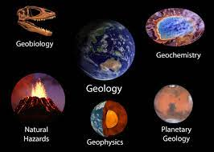
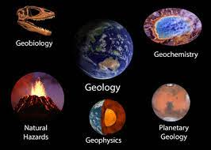

Geografie
- Climă
- Geologie Rocile europene din Precambrian au o vechime care variază de la aproximativ 3,8 miliarde până la 541 de milioane de ani.[214] Au urmat roci din Paleozoic (aproximativ 252 milioane de ani în urmă), din Mezozoic (până acum aproximativ 66 de milioane de ani) și din Cenozoic (ultimii 66 de milioane de ani). Scutul Baltic reprezintă cea mai mare zonă europeană cu cele mai vechi roci de pe continent, ea fiind erodată până a ajuns un relief redus.[214] Cele mai tinere roci apar în Sistemul alpin, care încă supraviețuiește ca munți înalți. În urmă cu aproximativ 200 milioane de ani supercontinentul Pangea s-a fragmentat dând naștere unui nou ocean, Marea Tethys. Închiderea acestui ocean în urmă cu aproximativ 50 de milioane de ani în urmă, prin subducție și procese tectonice, a dus la orogenia alpină care se întinde de la Oceanul Atlantic până la Turcia și conține multe centuri orogene separate (Pirineii, Alpii Elvețiano-Austrieni, Munții Apenini, Munții Carpați, Alpii Dinarici și Munții Pontici). Forma actuală a Europei datează de la sfârșitul Terțiarului în urmă cu aproximativ cinci milioane de ani.[215] Geologia Europei este extrem de variată și complexă și dă naștere la o mare varietate de peisaje pe continent, de la regiuni muntoase la câmpii.[216] Cea mai importantă caracteristică a Europei este dihotomia dintre regiunile muntoase înalte din Europa de Sud și o câmpie vastă, parțial subacvatică, în nord. Aceste două jumătăți sunt separate de lanțurile montane din Pirinei și Alpi/Carpați. Câmpiile nordice sunt delimitate în vest de Munții Scandinaviei și părțile muntoase ale insulelor britanice. Principalele corpuri de apă de mică adâncime care scufundă părți din câmpiile nordice sunt Marea Celtică, Marea Nordului, Marea Baltică și Marea Barents. Câmpia nordică conține vechiul continent geologic Baltica și, prin urmare, poate fi considerată geologic drept „continentul principal”, în timp ce zonele muntoase periferice și regiunile muntoase din sud și vest constituie fragmente din diferite alte continente geologice. Majoritatea geologiei mai vechi din vestul Europei a existat ca parte a vechiului microcontinent Avalonia.
- Flora Animalele și plantele europene au fost profund afectate de prezența și activitățile omului. Cu excepția Fennoscandia și a nordului Rusiei, puține zone sălbatice neatinse se găsesc în prezent în Europa, cu excepția diferitelor parcuri naționale.Probabil 80-90 % din Europa a fost odată acoperită de pădure. Principalul strat vegetal natural din Europa este pădurea mixtă. În nord, Curentul Golfului și Curentul Atlanticului de Nord încălzesc continentul. Sudul Europei ar putea fi descris ca având un climat cald, dar blând. Există frecvente secete de vară în această regiune. Crestele montane afectează și condițiile. Unele dintre acestea (Alpi, Pirinei) sunt orientate spre est-vest și permit vântului să transporte mase mari de apă din ocean în interior. Altele sunt orientate spre sud-nord (Munții Scandinaviei, Dinarici, Carpați, Apenini) și deoarece ploaia cade în primul rând pe partea munților care este orientată spre mare, pădurile cresc bine pe această parte, în timp ce pe cealaltă parte, condițiile sunt mult mai puțin favorabile. Puține colțuri ale Europei continentale nu au fost pășunate de animale la un moment dat în timp, iar tăierea habitatului forestier pre-agricol a provocat perturbarea ecosistemelor vegetale și animale originale. Flori sălbatice Probabil 80-90 % din Europa a fost odată acoperită de pădure, care se întindea de la Marea Mediterană până la Oceanul Arctic. Deși peste jumătate din pădurile originale ale Europei au dispărut de-a lungul secolelor de defrișare, mai mult de un sfert din suprafața ei terestră este împădurită, cum ar fi pădurile cu frunze late și mixte, taigaua Scandinaviei și Rusiei, pădurile tropicale mixte din Caucaz și pădurile de stejar de plută din vestul Mediteranei. În ultima perioadă, defrișările au fost încetinite și au fost plantați mulți copaci. Cu toate acestea, în multe cazuri, plantațiile de conifere au înlocuit pădurea naturală mixtă originală, deoarece acestea cresc mai repede. Plantațiile acoperă acum zone întinse de pământ, dar oferă habitate mai sărace pentru multe specii, care necesită un amestec de specii de copaci și structuri forestiere diverse. Cantitatea de pădure naturală în Europa de Vest este de doar 2-3 % sau mai puțin, iar în Rusia europeană de 5-10 %. Țara cu cel mai mic procent de suprafață împădurită este Islanda (1 %), în timp ce cea mai împădurită țară este Finlanda (77 %).[218] În Europa temperată, domină pădurea mixtă, atât cu frunze late, cât și de conifere. Cele mai importante specii din centrul și vestul Europei sunt fagul și stejarul. În nord, taigaua este o pădure mixtă de molid–pin–mesteacăn; mai în nordul Rusiei și nordul extrem al Scandinaviei, taigaua cedează loc tundrei pe măsură ce se apropie Arctica. În Mediterana, au fost plantați mulți măslini, care sunt foarte bine adaptați climatului său arid; Chiparosul mediteranean este, de asemenea, plantat pe scară largă în sudul Europei. Regiunea mediteraneană semi-aridă găzduiește multă pădure de arbuști. O regiune îngustă est-vest de pășune (stepă) se extinde spre est din Ucraina și sudul Rusiei și se termină în Ungaria și traversează taigaua spre nord.
- Fauna Glaciația din timpul celei mai recente ere glaciare și prezența omului au afectat distribuția faunei europene. În ceea ce privește animalele, în multe părți ale Europei cele mai multe animale mari și specii de prădători de vârf au fost vânate până la extincție. Fauna europeană de mamifere este compusă din 270 de specii, dintre care 78 endemice Europei (15 % dintre acestea sunt amenințate cu dispariția și 27 % au fost identificate ca fiind în declin).[219] Mamutul lânos a dispărut înainte de sfârșitul Neoliticului. Astăzi, lupii (carnivore) și urșii (omnivore) sunt pe cale de dispariție. Odată se găseau în majoritatea părților din Europa. Cu toate acestea, defrișările și vânătoarea au făcut ca aceste animale să se retragă tot mai mult. În Evul Mediu habitatele urșilor erau limitate la munți mai mult sau mai puțin inaccesibili cu acoperire forestieră suficientă. Astăzi, ursul brun trăiește în primul rând în peninsula balcanică, Scandinavia și Rusia; un număr mic persistă și în alte țări din Europa (Austria, Pirinei etc.), dar în aceste zone populațiile de urs brun sunt fragmentate și marginalizate din cauza distrugerii habitatului lor. Urșii polari pot fi găsiți în Svalbard, un arhipelag norvegian situat la nord de Scandinavia. Lupul, al doilea prădător ca mărime din Europa, după ursul brun, poate fi găsit în principal în Europa Centrală și de Est și în Balcani, și în unele enclave în Europa de Vest (Scandinavia, Spania etc.). Odată cutreierau marile păduri temperate din Eurasia, astăzi zimbrii europeni trăiesc în rezervații naturale.[220][221] Alte carnivore europene importante sunt: pisica sălbatică europeană, vulpea (în special vulpea roșie), șacalul și diferite specii de jderi, arici, diferite specii de reptile (cum ar fi vipera comună, șarpele de apă, șarpele de alun, gușterul) și amfibieni, diferite păsări (acvila de munte, codalbul, șorecarul comun, acvilă-țipătoare-mică, șoimul, bufnița, și alte păsări de pradă)
Europa se caracterizează, în general, printr-un climat temperat. Clima este mai blândă în comparație cu alte zone din aceeași latitudine de pe glob, datorită influenței curentului Golfului.Curentul Golfului este supranumit „încălzirea centrală a Europei”, deoarece face climatul Europei mai cald și mai umed decât ar fi altfel. Fluxul Golfului nu numai că transportă apă caldă către coasta Europei, ci și încălzește vânturile predominante din vest care suflă pe continent de la Oceanul Atlantic.Prin urmare, temperatura medie pe tot parcursul anului la Aveiro, Portugalia este de 16°C în timp ce la New York City, care este aproape pe aceeași latitudine, mărginind același ocean, este de doar 13°C. Berlin, Germania; Calgary, Canada; și Irkutsk, în partea asiatică a Rusiei, se află pe aceeași latitudine; Temperaturile din ianuarie la Berlin sunt în medie cu aproximativ 8°C mai mari decât cele din Calgary și sunt cu aproape 22°C mai mari decât temperaturile medii din Irkutsk. În mod similar, părțile nordice ale Scoției au un climat marin temperat. Temperatura medie anuală în orașul Inverness este de 9,05°C. Cu toate acestea, Churchill, Manitoba, Canada, se află aproximativ pe aceeași latitudine și are o temperatură medie de -6,5°C, oferindu-i un climat aproape subarctic. Masele mari de apă din Marea Mediterană, care egalează temperaturile pe o medie anuală și zilnică, sunt, de asemenea, de o importanță deosebită. Apa Mediteranei se întinde de la deșertul Sahara până la arcul alpin din partea sa nordică a Mării Adriatice, lângă Trieste. [212] În general, Europa nu este doar mai rece spre nord în comparație cu sudul, ci se răcorește și dinspre vest spre est. Clima este mai oceanică în vest și mai puțin în est. Acest lucru poate fi ilustrat de următorul tabel al temperaturilor medii în locurile de mai jos care urmează aproximativ latitudinilor 60, 55, 50, 45 și 40. Nici unul nu este situat la mare altitudine; majoritatea sunt aproape de mare. (localizare, latitudine și longitudine aproximative, cea mai rece lună medie, cea mai caldă medie lunară și temperaturile medii anuale în grade C)
 
